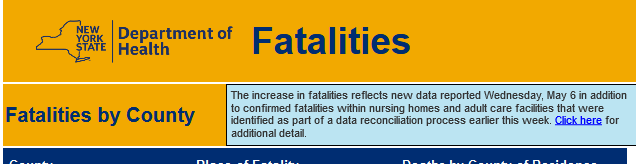

New York - revised deaths
Issue number 388
datadict opened this issue on May 8, 2020 at 3:25 am
All,
I noted the recent jump in New York deaths that is higher than the number Cuomo gives at the press conference (e.g. for 5th to 7th 230, 232, 231).
Where do these additional deaths come from? And is it possible to allocate these deaths to exact dates, so that it is consistent and growth rates can still be calculated?
Hi @datadict
Thanks for contacting us. The numbers come from NY State DOH Coronavirus dashboard fatalities section. They are a result of a data reconciliation effort by the state.

The state has provided more information here, but there is no daily breakdown and we are not sure if it will be provided in the future.